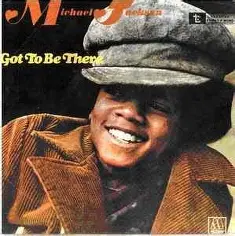
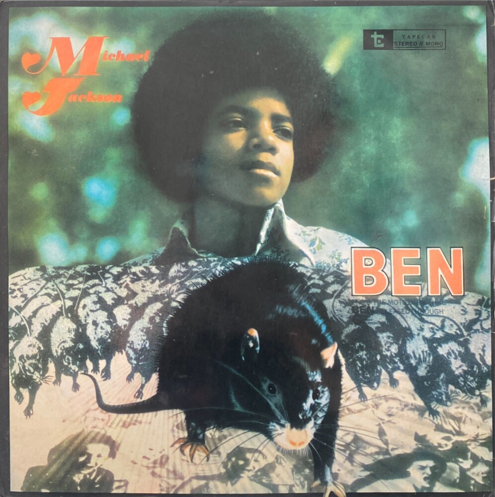
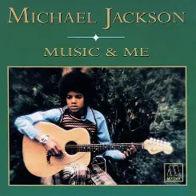
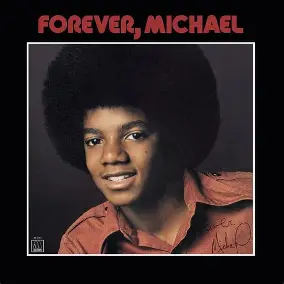
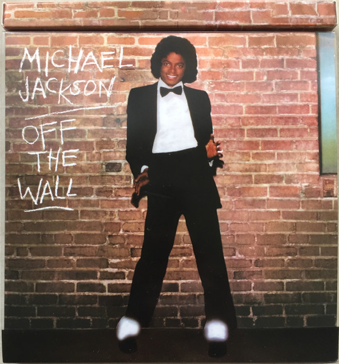
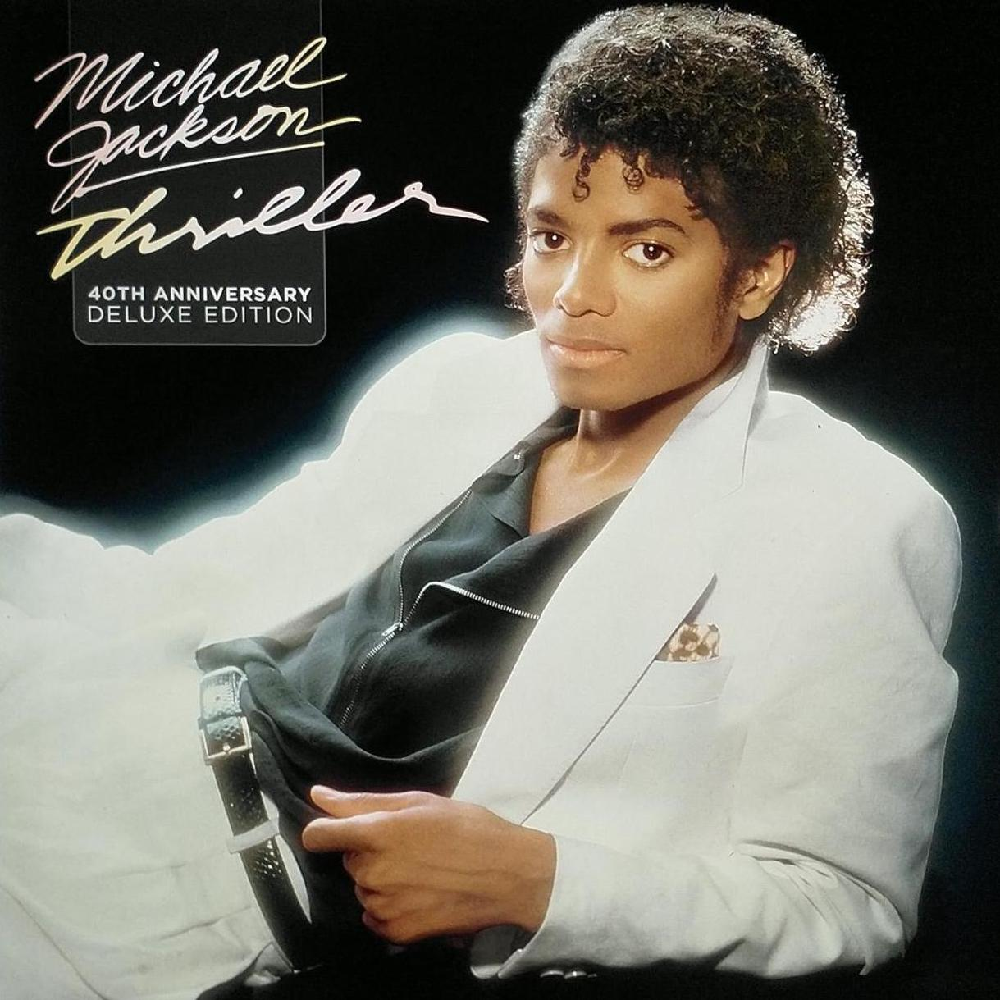
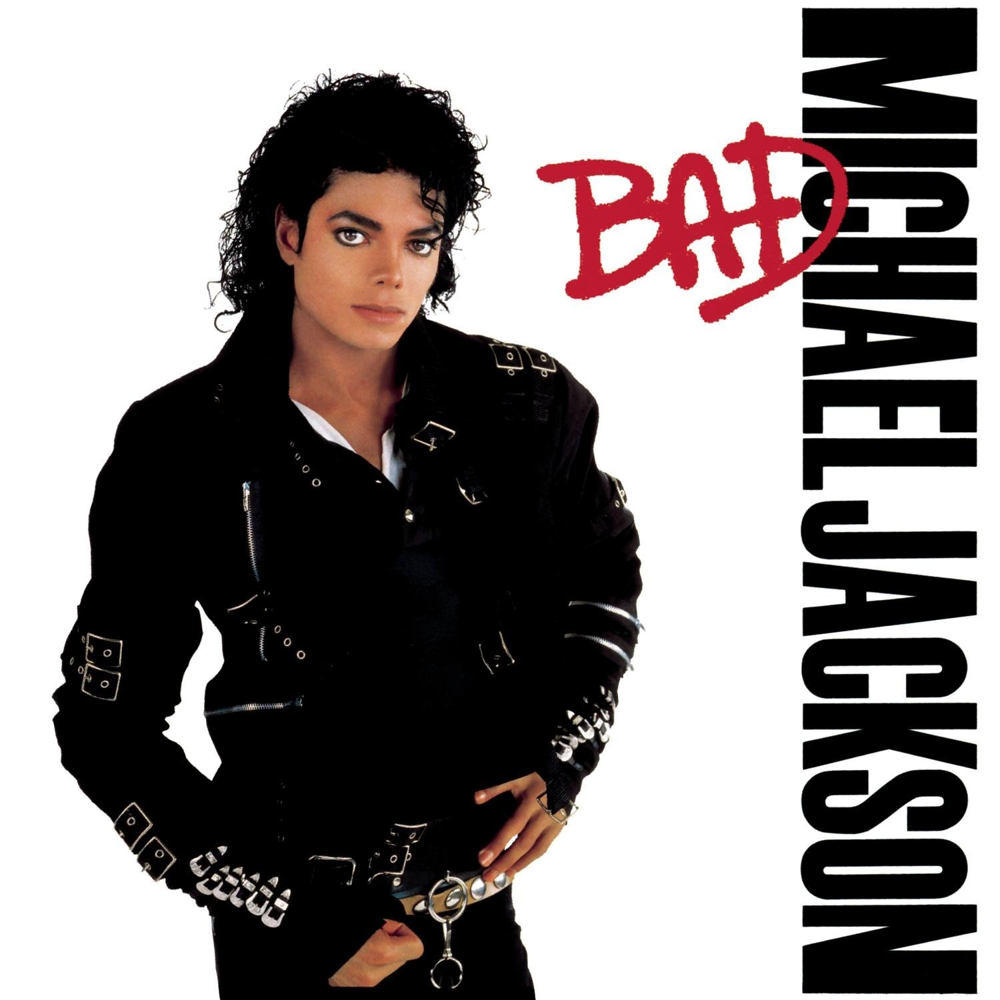
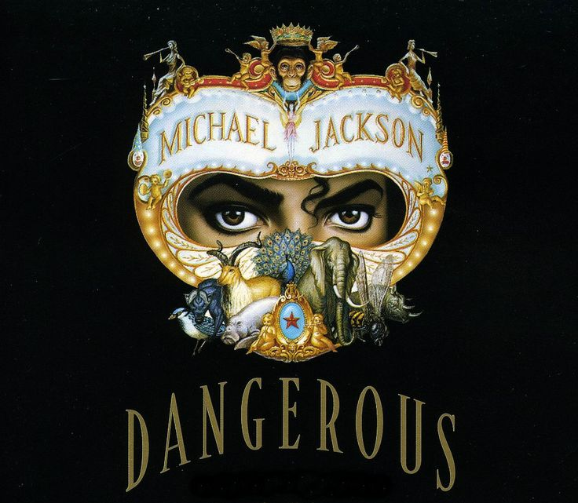
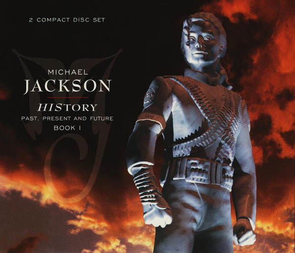
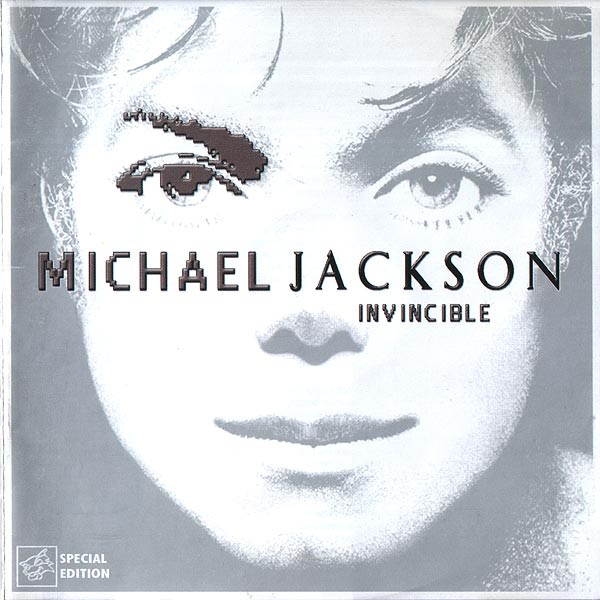

Álbuns do Michael Jackson ao Longo de sua Carreira

Com 10 faixas que destacam a versatilidade vocal do artista ainda adolescente e incluem sucessos como a faixa-título e "Rockin' Robin"

Mostra baladas e canções mais maduras vocalmente e emocionalmente. A faixa-título, Ben, também foi tema de um filme de mesmo nome e ganhou uma indicação ao Globo de Ouro e ao Oscar de Melhor Canção.

Michael Jackson tinha apenas 14 anos quando "Music & Me" foi lançado, durante um período desafiador de mudanças vocais e adolescência.

Quarto álbum solo e o último lançado pela Motown antes de mudar de gravadora.

O grande marco de sua transição para a fase adulta, produzido por Quincy Jones, com sucessos como "Don't Stop 'Til You Get Enough".

O álbum mais vendido de todos os tempos na história da música mundial, com clássicos como "Billie Jean" e "Beat It".

Sucesso histórico que quebrou recordes com cinco singles consecutivos no topo da Billboard Hot 100.

Álbum inovador que misturou novos ritmos com forte apelo visual, incluindo hits como "Black or White".

Álbum duplo que conteve uma coletânea de grandes sucessos no primeiro disco e músicas inéditas no segundo.

O último álbum de estúdio lançado pelo artista.